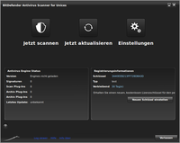

BitDefender
Archivierte Anleitung
Dieser Artikel wurde archiviert, da er - oder Teile daraus - nur noch unter einer älteren Ubuntu-Version nutzbar ist. Diese Anleitung wird vom Wiki-Team weder auf Richtigkeit überprüft noch anderweitig gepflegt. Zusätzlich wurde der Artikel für weitere Änderungen gesperrt.
Anmerkung: Die letzte Version des Programms aus der Paketquelle des Herstellers datiert auf April 2010.
Zum Verständnis dieses Artikels sind folgende Seiten hilfreich:
Bei BitDefender Linux Edition handelt es sich um einen Virenscanner, der sich sowohl über die Kommandozeile als auch mittels grafischer Oberfläche bedienen lässt. Bei der Installation wird ein Trial-Key installiert, der nach 30 Tagen verfällt. Eine für Privatanwender kostenfreie und ein Jahr gültige Lizenz kann von www.bitdefender.de  bezogen werden.
bezogen werden.
Installation¶
Das Programm ist nicht in den offiziellen Paketquellen enthalten.
Fremdquelle¶
BitDefender selbst empfiehlt die Installation aus den herstellereigenen Software-Paketquellen. Installiert wird eine Version, die zuletzt im Jahr 2010 aktualisiert wurde.
Um aus der Fremdquelle zu installieren, muss man unabhängig von der Ubuntu-Version die folgende Paketquelle freischalten:
Hinweis!
Zusätzliche Fremdquellen können das System gefährden.
deb http://download.bitdefender.com/repos/deb/ bitdefender non-free
Um diese hinzuzufügen, gibt man im Terminal folgendes ein:
sudo add-apt-repository 'deb http://download.bitdefender.com/repos/deb/ bitdefender non-free'
Danach sollte ein Neueinlesen der Paketlisten durchgeführt werden:
sudo apt-get update
Um die Fremdquelle zu authentifizieren, kann man
entweder den Signierungsschlüssel herunterladen  und in der Paketverwaltung hinzufügen oder folgenden Befehl ausführen:
und in der Paketverwaltung hinzufügen oder folgenden Befehl ausführen:
wget -q http://download.bitdefender.com/repos/deb/bd.key.asc -O- | sudo apt-key add -
Jetzt muss nur noch das folgende Paket installiert werden [1]:
bitdefender-scanner (Kommandozeilenversion)
 mit apturl
mit apturl
Paketliste zum Kopieren:
sudo apt-get install bitdefender-scanner
sudo aptitude install bitdefender-scanner
Benötigt man eine grafische Oberfläche, installiert man ein weiteres Paket:
bitdefender-scanner-gui (grafische Oberfläche)
mit apturl
Paketliste zum Kopieren:
sudo apt-get install bitdefender-scanner-gui
sudo aptitude install bitdefender-scanner-gui
Manuell¶
Die aktuelle Version kann von der Downloadseite heruntergeladen (ca. 130 MiB) und installiert [2] werden. Dabei stehen zwei Varianten mit oder ohne grafische Oberfläche zur Verfügung (wobei die Variante BitDefender-Antivirus-Scanner-nogui-VERSION-linux-ARCHITEKTUR.deb.run veraltet ist und hier nicht weiter berücksichtigt wird):
32-Bit: BitDefender-Antivirus-Scanner-VERSION-linux-i586.deb.run
64-Bit: BitDefender-Antivirus-Scanner-VERSION-linux-amd64.deb.run
Hinweis!
Fremdpakete können das System gefährden.
Zur Installation öffnet man ein Terminal [3] und verwendet folgenden Befehl:
sudo sh BitDefender-Antivirus-Scanner-VERSION-linux-SYSTEMARCHITEKTUR.deb.run
Damit werden die benötigten Pakete erzeugt, die nach Bestätigung der Lizenzbedingungen nach /opt/BitDefender-scanner/ installiert werden [2]:
Please enter "accept" if you agree to the License Agreement. Enter anything else if you don't agree to the terms in the License Agreement. The installation process will stop. accept Installing BitDefender Antivirus Scanner v7.7-1 ... Vormals nicht ausgewähltes Paket bitdefender-scanner wird gewählt. (Lese Datenbank ... 228405 Dateien und Verzeichnisse sind derzeit installiert.) Entpacken von bitdefender-scanner (aus bitdefender-scanner_7.7.1-1809_i386.deb) ... bitdefender-scanner (7.7.1-1809) wird eingerichtet ... Do you want to install BitDefender Antivirus Scanner GUI package ? (Y/n) y Installing BitDefender Antivirus Scanner GUI v7.7.1-1809 ... Vormals nicht ausgewähltes Paket bitdefender-scanner-gui wird gewählt. (Lese Datenbank ... 228472 Dateien und Verzeichnisse sind derzeit installiert.) Entpacken von bitdefender-scanner-gui (aus bitdefender-scanner-gui_7.7.1-1809_i386.deb) ... bitdefender-scanner-gui (7.7.1-1809) wird eingerichtet ... BitDefender Antivirus Scanner successfully installed!
Befehle¶
Nachdem das Programm installiert wurde, kann man in einem Terminal [1] die zum Ausführen des Programms notwendigen Befehle eingeben. Der Befehl für die Kommandozeilenversion lautet bdscan. Einige Beispiele:
bdscan /home/BENUTZERNAME ## BitDefender durchsucht den vorgegebenen Ordner und zeigt die überprüften Dateien an bdscan . ## aktueller Ordner wird gescannt bdscan / ## System wird gescannt sudo bdscan --update ## Das Programm wird aktualisiert
Parameter¶
| Parameter: | Beschreibung: |
--update | Aktualisiert die Virendefinitionen |
--no-archive | Archive werden nicht überprüft |
--no-list | Die überprüften Dateien werden nicht angezeigt |
--no-recursive | Unterordner werden ausgelassen |
--no-pack | Gepackte Programme werden ausgelassen |
--action=disinfect | System säubern |
--action=quarantine | Infizierte Dateien in Quarantäne-Ordner verschieben |
--action=delete | Infizierte Dateien werden gelöscht |
--virus-list | Zeigt die Virenliste an |
--quarantine=path | Pfad zum Quarantäne-Verzeichnis (Voreinstellung: /opt/BitDefender-scanner/var/quarantine) |
--help | Zeigt alle verfügbaren Befehle an |
Hinweis:
Einigen Parametern muss sudo vorangestellt werden!

Grafische Oberfläche¶
In der aktuellen Version von BitDefender for Unices ist eine GUI bereits enthalten. Alle wesentlichen Funktionen wie das Scannen von Ordnern und das Update können darüber gesteuert werden. Unter den "Settings" können sowohl der Log-Ordner wie auch der Quarantäne-Ordner konfiguriert werden.
Für die grafische Oberfläche muss zusätzlich das Paket bitdefender-scanner-gui installiert werden. Der Befehl
bdgui
startet dann die grafische Oberfläche.
Problembehebung¶
Speicherzugriffsfehler¶
Die folgende Meldung kann nach dem Starten aufgrund der Inkompatibilität zwischen den letzten Antiviren-Engines auftreten:
"Loading plugins, please wait \ Speicherzugriffsfehler"
Nach der offiziellen Mitteilung BitDefender Antivirus Scanner for Unices  geht man wie folgt vor:
geht man wie folgt vor:
cat /opt/BitDefender-scanner/var/lib/scan/versions.dat.* | \
awk '/bdcore.so.linux/ {print $3}' | \
while read bdcore_so; do
sudo touch /opt/BitDefender-scanner/var/lib/scan/$bdcore_so;
sudo bdscan --update;
sudo mv /opt/BitDefender-scanner/var/lib/scan/bdcore.so /opt/BitDefender-scanner/var/lib/scan/bdcore.so.old;
sudo ln -s /opt/BitDefender-scanner/var/lib/scan/$bdcore_so /opt/BitDefender-scanner/var/lib/scan/bdcore.so;
sudo chown bitdefender:bitdefender /opt/BitDefender-scanner/var/lib/scan/$bdcore_so;
done Unter Umständen muss vorher noch die Datei /opt/BitDefender-scanner/var/lib/scan/bdcore.so gelöscht werden, sodass das Anlegen der Verlinkung funktioniert.
 Programmübersicht
Programmübersicht- Erstellt mit Inyoka
-
 2004 – 2017 ubuntuusers.de • Einige Rechte vorbehalten
2004 – 2017 ubuntuusers.de • Einige Rechte vorbehalten
Lizenz • Kontakt • Datenschutz • Impressum • Serverstatus -
Serverhousing gespendet von